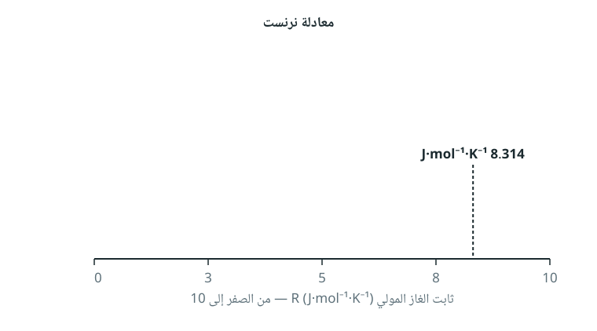

معادلة نرنست
Nernst equation
معادلة نرنست تربط جهد الخلية الكهروكيميائية بتراكيز المواد المتفاعلة: E = E° − (RT/nF)·ln Q. تُفسّر كيف يتغيّر جهد القطب مع التركيز ودرجة الحرارة، وهي أساس عمل أقطاب القياس والحساسات الكيميائية والبطاريات.
في خلية كهروكيميائية، الجهد المقيس لا يساوي الجهد القياسي E° إلا عند الظروف القياسية حيث الأنشطة تساوي الواحد. ومع تقدّم التفاعل تتغيّر الأنشطة، فيتغيّر الجهد وفق: E = E° − (RT/nF)·ln Q، حيث Q حاصل أنشطة النواتج على المتفاعلات وn عدد الإلكترونات المتبادلة وF ثابت فاراداي. وعند 25 °C يتحول المعامل إلى 0.025693/n فولت لكل وحدة لوغاريتم طبيعي، أو 0.05916/n فولت لكل وحدة لوغاريتم عشري. مثال: خلية زنك ونحاس بجهد قياسي 1.100 V وn = 2 وQ = 0.01 تعطي E = 1.100 − (0.05916/2)·log(0.01) = 1.159 V.
كيف تعمل الظاهرة؟
الجهد الكهروكيميائي ينشأ من اختلاف الطاقة الكيميائية للإلكترونات بين نصفَي الخلية. فالإلكترون ينتقل تلقائياً من الجانب ذي الطاقة الأعلى إلى الأدنى، والفرق يُقاس بالفولت. وحين يزيد تركيز المادة المؤكسدة عند القطب، يزيد ميلها إلى استقبال الإلكترونات فيرتفع جهد القطب؛ وحين يزيد تركيز المادة المختزلة يقلّ الجهد. وهذا ما يعبّر عنه الحد اللوغاريتمي: الجهد يتغير خطياً مع لوغاريتم النسبة، لا مع النسبة نفسها، لأن الطاقة الحرة تتغير لوغاريتمياً مع النشاط.
العلاقة بالأرقام
E = E° − (RT/nF)·ln Q. وعند 298.15 K: RT/F = 8.314 462 618 × 298.15 / 96 485.332 12 = 0.025693 V، وبالتحويل إلى لوغاريتم عشري يُضرب في 2.302585 فيصير 0.05916 V. مثال: خلية Zn/Cu، E° = 1.100 V، n = 2، Q = [Zn²⁺]/[Cu²⁺] = 0.01 → E = 1.100 − (0.05916/2)(−2) = 1.100 + 0.0592 = 1.159 V. ولو انعكست النسبة إلى 100 لصار E = 1.100 − 0.0592 = 1.041 V.
مفاهيم متقاربة
يُفرَّق بين نرنست وتوازن التفاعل: عند التوازن Q = K وE = 0، ومن هنا تُشتق العلاقة E° = (RT/nF)·ln K التي تربط الجهد القياسي بثابت التوازن. ويُفرَّق بين الجهد القياسي والجهد الرسمي: القياسي عند نشاط واحد، والرسمي عند تركيز معلن كـ1 mol/L مع معاملات نشاط محسوبة. ويُفرَّق بين القطب المرجعي وقطب القياس: المرجعي ثابت الجهد، وقطب القياس هو الذي يتبع نرنست. وأخيراً يُفرَّق بين جهد الخلية وجهد نصف الخلية: الأول فرق بين نصفين، والثاني يُقاس مقابل مرجع.
حدود التطبيق
المعادلة تفترض توازناً عند القطب، فلا تصف حالة سحب تيار كبير حيث يسيطر فرط الجهد. وتفترض أن التفاعل قابل للانعكاس وأن نقل الكتلة سريع، فتنحرف عند التيارات العالية أو المحاليل اللزجة. ولا تصف الأنظمة التي يشارك فيها الماء أو الأيونات المشاركة في pH دون تصحيح. كذلك لا تُستعمل للأنظمة غير المتوازنة كالتآكل النشط أو الخلايا ذات الأغشية التي تضيف جهد انتشار، ولا لقياس تراكيز منخفضة جداً حيث تظهر ضوضاء وتأثيرات سطحية.

| الكمية | القيمة | المصدر |
|---|---|---|
| ثابت الغاز المولي R | 8.314 462 618 J·mol⁻¹·K⁻¹ | [1] |
| الميل الحراري 2.303RT/F عند 25 °C | 0.05916 V | [1] |
المصادر
- 1 CODATA Value: molar gas constant — NIST — CODATA 2022 recommended values (2024). physics.nist.gov/cgi-bin/cuu/Value?r · اطُّلع عليه 2026-11-21
- 2 CODATA Value: elementary charge — NIST — CODATA 2022 recommended values (2024). physics.nist.gov/cgi-bin/cuu/Value?e · اطُّلع عليه 2026-11-21
- 3 CODATA Value: Avogadro constant — NIST — CODATA 2022 recommended values (2024). physics.nist.gov/cgi-bin/cuu/Value?na · اطُّلع عليه 2026-11-21
استشهد بهذا المصطلح
الصيغتان مبنيتان من بيانات الصفحة نفسها: العنوان والتاريخ ورابط النسخة المنشورة.
معادلة نرنست — Nernst equation. (2026). ديوان المعرفة — انفراد. https://infiradev.com/diwan/terms/term-nernst-equation.html
@misc{term-nernst-equation2026,
title = {معادلة نرنست},
titleaddon = {Nernst equation},
howpublished = {{ديوان المعرفة — انفراد} — مرجع علمي عربي},
year = {2026},
url = {https://infiradev.com/diwan/terms/term-nernst-equation.html},
urldate = {2026-11-26},
note = {مراجعة علمية: hermes (مراجعة معتمدة 2026-11-26)}
}
راجعه: hermes (مراجعة معتمدة 2026-11-26) · 2026-11-26 · آخر تحديث 2026-11-21